开极氪7X跑了3万公里，我才理解汽车的情绪价值
空间要够，续航要稳，补能不能太麻烦，长途不能掉链子，最好还能兼顾一点舒适和成本。 尤其是家里只有一台车的时候，这些东西比什么都重要。
最新文章 共 175 篇
开极氪7X跑了3万公里，我才理解汽车的情绪价值
空间要够，续航要稳，补能不能太麻烦，长途不能掉链子，最好还能兼顾一点舒适和成本。 尤其是家里只有一台车的时候，这些东西比什么都重要。
人生第一台新能源车怎么选？开了9年新能源后，我建议先看这5个生活场景
月初看到一份 5 月乘用车销量榜，前20几乎已经被新能源车型占据。

从比亚迪唐到极氪7X：9年新能源车主的23篇真实用车记录
从比亚迪唐到极氪 7X，我把 9 年新能源车经历做了仔细的梳理，因为如果只看单篇文章，我写的新能源汽车系列好像有点散。
极氪7X开了 3 万公里后，我在车上试了试AI电台
极氪 7X 开到 3 万公里后，我越来越明显地感觉到，车上的声音内容并不是一个小问题。

极氪7X车品消费复盘：2600元花出去后，哪些后悔，哪些离不开？
经常买车的都知道，在提车的前后，很容易进入一个买买买的兴奋期，其中一个显著的表现是：想买的便是各种车品。
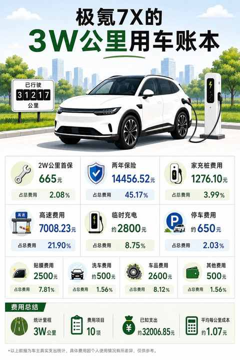
一个普通中年人的第200篇原创：写作到底改变了什么
今天要去福州喝喜酒，一大早便起来赶高铁，顺利上车后，顺势在座位上打开笔记本，和往常一样看了看公众号后台：
极氪7X开到3万公里，保养、充电、保险一共花了多少钱
一晃，距离提车已经17个月，目前已行驶超过3w公里。

中年人堆跑量的B面：当 ‘疲劳债’ 开始累积，我们该如何 ‘偿还’ 与休整？
从去年9月份开始，基于备赛的考虑，我逐渐把每月跑量从150km左右增加到200km以上，自此过去8个月的跑量已经超过200km。

从新鲜到习惯：16 个月开极氪7X跑3万公里后，我离不开的与早已忽略的
这辆极氪 7X的总里程已超过 3w 公里，又到了可以做一次用车小结的时候。

从键盘到方向盘：36岁，我的第一份兼职为什么偏偏选了跑货拉拉？
上一篇文章讲到兼职，主要是跑货拉拉 20 天的经历和感受：
时薪不到30元，56单流水2627：一个中年人兼职开车送货的7个真相
在 2 月底的时候，我这个待业的中年男人终于是迈出了这一步，开启第一份兼职工作：成为一名兼职的货拉拉司机，喜提杨师傅的称号。
100度纯电SUV第2次春运实录：去程充电1次，返程我学会了「下高速」
我是在 2024 年的 12 月27 号提的极氪7X，是长续航四驱智驾版，标配的100 度电池，2025 年的春节是这辆车的第 1 次春运之旅。
一天奔赴六地：在密集的脚步中，看见衰老、红包与未变的故里
过年的前一天，是回到的第二天，在镇上呆着实在是过于无聊。

想通了！开电车真没必要里程焦虑：一年两万公里，实测续航够用，充电也越来越方便
恰恰相反，从插混换到纯电的原因，并不是插混让我里程焦虑，而是基于下面三个因素的综合考虑：

冬天跑步有感，一件难而正确的事
本周二，上海终于迎来了 2026 年的第一场雪，比以往来的更早一些，当时用手机录下了打开窗，雪花飘进来的时刻。
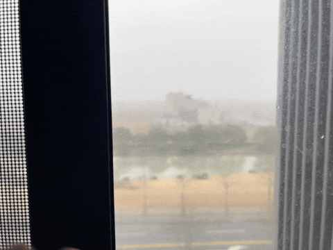
从插混换到纯电，一年开2万公里后，我已经不在意能耗且没有里程焦虑！
昨天上海降温明显，早上开车送娃上学的时候把空调、座椅加热、方向盘加热全都开了，车内温度上来的挺快。
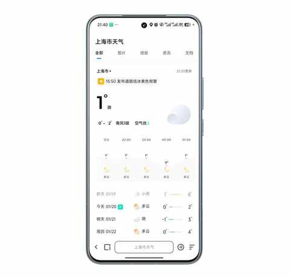
2026，中年人的自觉：学会与问题长期共存
和以往一样的是：基本每年的 12 月下旬，在朋友圈、微博、抖音、小红书等地方，能看到不少年度总结或复盘。

跑步30个月，首马这场“摸底考试”得了多少分？我的3点复盘
人生中的首个全马，似乎是我跑步 30 个月的一场 “摸底考试”， 真真假假，虚虚实实，都被摸了个透。

老车主终于去试驾了焕新版极氪7x：情绪依然稳定！
作为极氪 7x 的老车主，提车解接近一年，已经开了 2w，焕新版的各种相关信息都一直在关注。

记一次试驾体验：极氪7X车主眼中的理想i6，找到了家用SUV的另一种答案
昨天，终于试驾了理想的车，之前理想 L 系列卖的很好的时候，并没有想去试驾，主要是基于两个点：

90年，35岁，跑步30个月，3442km，带来的5个改变
在盘点数据的时候发现，我是从 2023 年的 6 月份开始跑步的，满打满算已经 30 个月，总计完成 3442km，月均 114.7km。

跑步两年半才明白：每个人的节奏，只有自己知道！
从 9 月开始，逐步把跑量从 150km 增加到 200km 以上，因为 10 月、11 月、12 月都有一场比赛要跑，尤其是 12 月的首个全马。
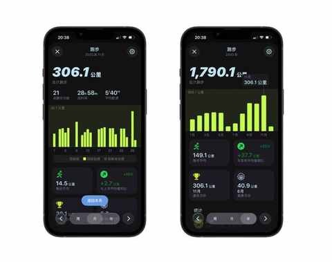
农村、大专生、笨小孩：我的来时路
在已经发布了 170 多篇原创文章中，有三篇是关于自己的过往，涉及到自己的部分总是最难写的。

双持党的秋冬体验：当指纹识别频频失效，才懂得FaceID的好处
暑期的时候买的小米 15s Pro，到现在已经使用 4 个多月，用起来很是满意。

不思考，你就会买很多并不需要的东西
最近几个月因为跑量增加的缘故，看了不少博主关于跑鞋的测评和分享。

别再问我省多少油钱了！作为 8年新能源车主，我想说：买它，是为了一种新的体验
不可否认，我们中的绝大多数，第一次开车都是在学驾照的时候，可能在高考后、大学时、工作后……

35岁的这个11月，我竟挑战了这么多“第一次”
一个很少被提及的常识，随着年龄的增长， 我们对客观时长的判断会随年龄发生变化 ，对时间的流逝逐渐不敏感。
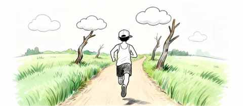
日更，是不断了解自己的过程
刚开始日更的时候，一度在某些文章下面都有一个类型的评论，总有一些人说是 Ai 写的水文。

90年，35岁，日更90天，有了这 3 个意外收获
今天是日更的第 90 天，难以想象，居然已经连续更新了89 天。
备战首马！月跑量即将首次突破300公里，我的5点真实感悟
跑步的频次没有变化，只是单次距离尽量都超过 15km，根据配速的不同，单次跑步时间在 75 分钟到 90 分钟。
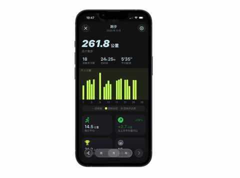
不禁想问问大家，被Ai工具省下来的时间，都用来做什么了呢？
毫无疑问，当下的 Ai 工具是有用的，正确的使用，肯定能提高效率，不管是在工作还是生活中。

90 年，35 岁，一个普通中年人决定通过运动，保持在场！
通过运动减肥，有一个显著的好处：在吃方面能不用太严格，大大降低在减肥前期坚持的难度。

日更100天走到第84天，我撞上了“墙”：下笔难，写的慢，最难的时候到了！
之前我还不太确定，大概是 11 月 9 号在合肥跑完马拉松回来之后，是结结实实的撞上了。
90 年，35 岁，E区出发，即将在福州解锁首全马
和 11 月初的合肥半马一样，因为分区之前没有 A 级赛事的成绩，被分到 E 区。

嘿！还记得“为QQ等级挂机”的岁月吗？来晒晒你的等级吧！
上上周的一天早晨，刚把娃送到学校门口，走回停车场的时候，遇到红灯，拿起手机看到了 QQ 的提醒，点进去显示的是：你的 QQ 等级已经达到 115 级。
11 个月，开极氪7X跑两万公里，用车总结及好物分享
这篇文章是 8月 3 日发布的，因为 7 月份开了 5000km+，有一些用车体验和感受，便整理成文章发布出来了。
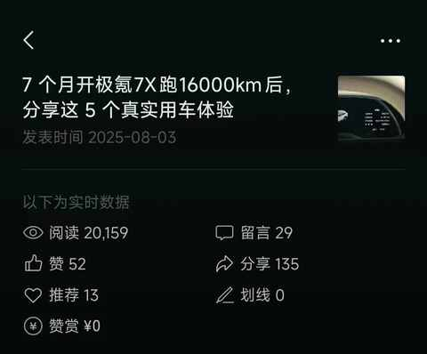
人生的首个全马，倒计时 30 天，我做了这些准备……
在 8 月 29 日抱着试试看的心态报名了福州马拉松的全马项目，当时看到人数规模挺大，预估中签率可能比较高，果然在 9 月 25 日收到中签的短信。

3000km实测，一个人跑步的真相：在享受自由的同时，也要面对提高的不易
一个人跑步是挺常见的，从早到晚都能在路上看到独行的跑者。

一个中年男人的顿悟：有些道理只有不断做家务才能懂得
一、作为 男人暂时给不了情绪价值，请多做家务
中年减肥成功2年后，才发现运动形式真不重要，守住这3点才能不反弹！
我身高177cm，从体重最大的时候大约是 91kg，到现在日常维持在 75kg 左右，总计减掉 30 多斤的体重，同时因为规律作息和运动，身体状态比以往更好。

别慌！和所有Intel版Mac用户共享：3个让我们继续用的理由和2个续命秘籍
一、购于 2020 年的 Intel 版 Macbook Pro
老车主看了极氪7X的焕新版之后：情绪稳定！
初代极氪7X 是在去年的 9 月 20 号上市的，历时一年又一个月在今年的 10 月 28 日，焕新版正式上市。
连续两个月跑量超200km：我的3个意外收获！
今年比较幸运，开始尝试报名马拉松的第二年便中签三场比赛，分别是桐庐的半马、合肥的半马、福州的全马。

中年减肥成功2年后，才发现这5个坑当初要是有人点醒我该多好！
说是踩坑，其实主要还是当时减肥的时候陷入到一些误区，没有把时间和精力用在对的地方。

日更的第60天，我似乎掉进“选题陷阱”：面对500+备选题，下笔反而更难？！
这是近期频繁出现的问题，是一种该来的总会来的感觉。 最突出的表现是：

中年减肥成功2年后，才发现维持体重靠的不是毅力，而是这5个微习惯
如果一定要说我 30-35 岁 这 5年有什么大的变化，那减肥成功绝对是排在第一个的巨大改变。

一个中年男人消费观的 3 个转变
时间在逐步往前推移，年岁渐长，随身体变化带来的是一系列的连锁反应。
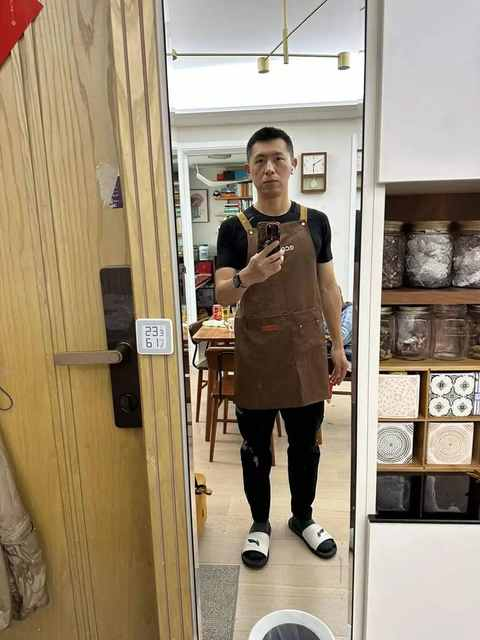
8年驾龄复盘：新手期的每一次手忙脚乱，都成了现在我安全驾驶的“肌肉记忆”
最近一年开车会比之前每年都多不少，以往每年 1w 公里左右，今年是肯定至少有 2w 公里。

一个中年人的2025年桐庐半马赛后复盘：我的 5 个收获
从氛围到赛道，再到装备之类的都和平时日常跑步大不一样。

桐庐半马前24小时：安于日常，拥抱期待
昨晚在准备行李和比赛用品的时候计划着今天早上要睡到 8 点多，在补补觉的同时也是给比赛蓄力。

弯路没白走！8年新能源车主的真心话：这8件车载用品，让高速用车体验提升明显！
在 7 月份也就是暑期，我们一家三口第一次用纯电 SUV 来了一次长途的自驾游。

一个中年男人的140次发文，换来第一篇的10万+
准确点说是，一个年过 35 岁的普通中年男人决定要重拾表达欲！

为什么说放弃Apple Watch很容易，而真正考验人的是下一块智能手表的选择？
上个月有感于用了 6 年的 Apple Watch 一直以来的几个痛点，下定决心要放弃使用 Apple Watch，甚至当天就把健康APP 里面的数据做了备份。
运动后总酸痛？这4个家常小物件，是放松肌肉的“隐形神器”
距离我第一次跑 10km 已经有 2 年多的时间了，但直到现在我依然记得的并不是当天跑 10km 的状态。
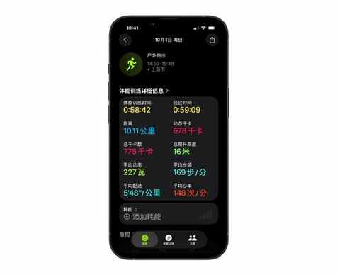
我的电车购买逻辑：用100kWh大电池的“确定性”，替代三电优化的“不确定性”
在 10 天前写了一篇文章，是关于开了 7 年混动之后为什么选择纯电。
中年人提高跑量的意外之喜：最大摄氧量首次突破62！
1️⃣ 最大摄氧量（VO₂max）也可称为 有氧适能

没想到送老婆去面试，居然是一次 “班味” 之旅
昨天老婆是 11 点面试，怕误了试驾 9 点半便从小区出发了。
开了7年混动后投向纯电9个月，一个中年新能源车主的生活有了哪些新变化？
几乎每天都会开，而且一点也不排斥，有时候停好车还不由自主的回头看看， 最明显的表现是下面三个：
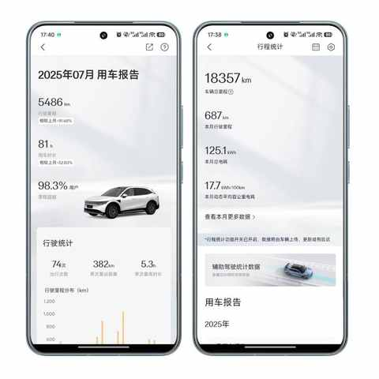
车型太多，普通人怎么选新能源车？分享一个更符合普通人的选车方法！
由于近半年一直在不间断的分享选车感受和用车体验，所以不时会有亲戚朋友来询问购车方便的各种问题。
弯路没少走！8年新能源车主的真心话：这10件车载好物，日常用车真的离不开！
在2017 年成为人父的时候，正值科目三和科目四的考试，待顺利拿到驾照便马不停蹄的开始看车，最终在 5 月份提车，正式成为了一名新能源车主。

被一条留言击中，然后开始不由自主的“胡思乱想”
当时我在骑自行车接娃放学的路上，在遇到一个红绿灯时间比较长的路口的时候，打开手机看看文章的动态，这条留言便映入眼帘。还在想怎么回复的时候，已经快变绿灯咯，就先把这条放了出来等到学校门口再仔细想想怎么回复。
开了7年混动后，我为何最终投向纯电？一位车主的心路历程
每个人想买车或换车的的需求可能都大致相同，但换车念头产生的契机肯定是各不一样的，和使用场景及偶发事件息息相关。
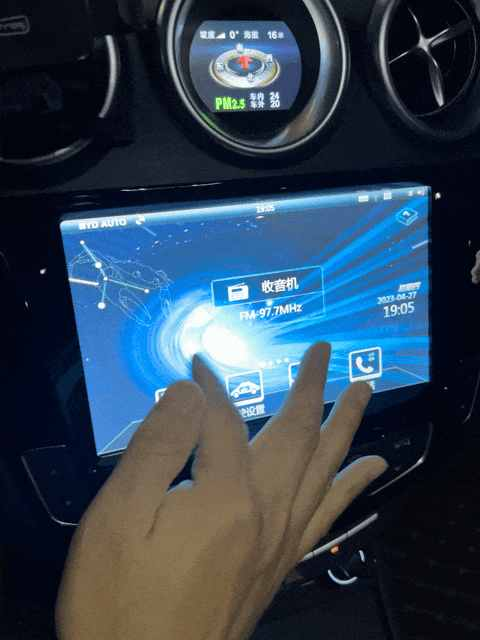
持续运动最大的感受：承认吧，谁还能没有约束条件！
上私教课的时候，在我身上会出现一个典型的场景，一般是这样的：

写给中年人的，低成本跑步入门（入坑）指南
由于不断的跑步，每次跑步之后也会分享动态在朋友圈，逐渐也影响到一些朋友想尝试跑步这项运动。
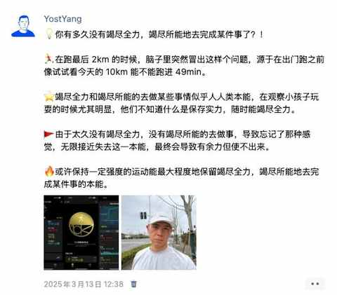
从小透明到单周10w+！日更30多天，居然让我的几十篇旧文也重获新生？！
从去年开始在公众号发文，再到今天收到公众号助手推送的创作者周报显示再次周阅读量破10w。
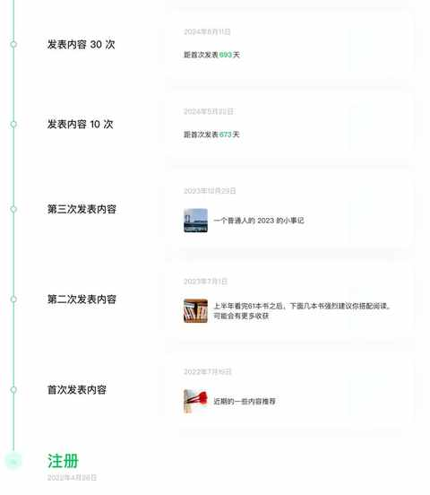
35岁农村沪漂的“顿悟”：那些没人明说的5个感受
网上都说 35 岁是一个分水岭，深度体验下来：发现还真是！
90 年，35 岁，跑步两年半，首次月跑量突破200km是什么体验？
开始跑步两年半以来，未曾在某个月达到 200km，去年最多的一个月是 176.1km。

国庆假期第一天，三个沪漂中年男人的饭局
第一次过来这边，绝大多数店铺是吃的喝的，各种饭馆和奶茶店。

作为一名上海郊区小学生的家长，我超爱每周仅一天的 “无作业日”！
各种中小学减负的新版隔段时间就能在各大媒体看到，看的多了也就越来越不当真，看到这个类型的新闻，约等于听到路边的喇叭在喊：“两元两元！”，“XX 皮革厂倒闭了……”。

哪个瞬间让你猛然意识到：自己真的结婚了？
昨天是9月28日，10年前这个时候一大早就去到县城办理结婚手续，下午3点50 左右和老婆一起领到了盖上钢印的结婚证。
提前 5 天完成！跑步两年挑战月跑200km成功，福州马拉松中签，即将解锁人生中第一个全马！
可能对于许多跑量 200km 以上的跑友来说，一个月跑 200km 是再正常不过的事情，如果要出成绩这个跑量还少了很多。

防晒、专注、心流！中年人跑步的仪式感，这顶帽子全给了
中年人跑步的原因各有不同，但殊途同归，必然会经历对跑步装备的发烧到退烧，最终必将找到让每次跑步都有仪式感的装备。
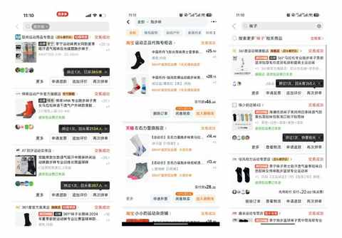
2025 年还余下 99 天，中年人的生活又有了一些新变化
每个上学的早晨都是开车送儿子上学，每次进出小区车库的时候，在扫描完车牌闸机升起的同时也会显示剩余天数。
完成75%！跑步两年首次挑战月跑200km，分享这4个真实感受
在查看跑量数据的时候发现，两年多来没有一个月的跑量是达到 200km，目前最多的一个月份是 2024 年的 10 月，跑了 176.1km。
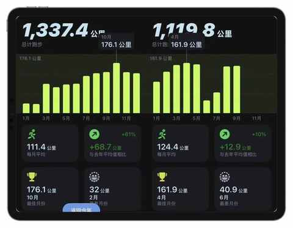
聊聊人生第一台车：比亚迪唐！2017-2024，真实使用体验分享
比亚迪唐 2015 年款四驱旗舰型， 是一款中型 SUV：，插混车型，纯电续航是 80km，很多时候也被称为：唐 80。
拒绝偏科，回归实用：极氪7X，为家庭用户打造的一款“正常”的纯电 SUV
作为家长已经完成 节奏的 切换成 开学模式 ，每一个上学的早晨都是开极氪7X 送儿子上学，即使来回才 9km 不到，偶尔也会在开车的时候感慨自己当初的选择是完全没有错的。
从看见到接纳：90年农村出生的我，决定与 “补偿心理” 和解
人作为社会性动物，很难不受环境和家庭的影响，从小到大总会有一些需求，因为当时的一些限制条件而未被满足，或主观或客观。

日更的第 18 天，聊聊我为什么要挑战日更 100 天
为什么把知晓这样一个简单的原因放在第一个，那是因为仅仅是知道并明白某些道理和逻辑，已经是有门槛的一件事。
5 个月亲测：养猫的A面与B面
没想到啊，今天不到五点就开始叫唤，喂了之后想补觉都不行，原计划今天的文章选题不是猫，因为 掐指一算，再过几天才是19 号，是养猫整 5 个月的日子。

更新公众号的额外收获：从留言区 get 到的 8 个知识点
随着发布文章的增多，逐渐有了一些推荐流量，留言区反而让我有了额外的收获。

当认清自身需求之后：面对 iPhone 17的发布，毫无波澜，无购买欲！
面对信息的洪流，最简单的应对方式是：不假思索的随波逐流。
90 年，35 岁，农村大专生，毕业 13年：主动的 i 人运气不会太差
这是一个一直想聊，但始终没有下定决心聊的话题。也很正常，要聊关于自己的内容总是不容易的。
一个事实：人到中年，才会不断去认识自己的身体！
年龄所带来的身体变化，是一个绝佳的契机，种种不适就等同于是身体的表达。

带人跑步有感：有难度、有收获、有意义
跑步，是一项有强度的运动，随着配速的提高强度也同步不断升级。

儿童羽毛球课亲测：好的课程设置是如何“勾住”孩子的？
几乎所有家长都知道运动的重要性，运动的好处多多，不仅能强身健体更能培养运动习惯和对于各项运动的兴趣。
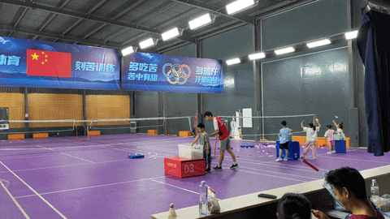
中年男人，你得主动去油啊！最快的方式就是减重！
最近两年，每当在不小心看到多年前的照片时，会恍惚会看不下去。
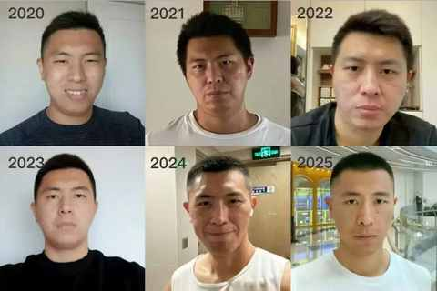
一位中年人的“执念”：我为什么坚持送书？
小时候家附近有一个新华书店，虽然经常去逛但极少买。

当月跑量陡降100km，我才明白“跑量是基础”的真正含义
年初的计划是保持每月 130-160km 的跑量，然后试试看在周末跑几次 25km 及以上的长距离，再报名一个半马或全马比赛感受下比赛氛围。

谁能想到，中国男篮上次进亚洲杯决赛居然是 10 年前……
昨天晚上比赛刚结束，直播画面里面就出现一个显目的标题：

27 个月，2500km 实测，跑步新手踩坑指北
自 23 年开始跑步两年以来多，跑了 2500km。

一个普通中年人，规律更新一年公众号之后的 5 个感受
距离 100 这个有点里程碑的数字只差 24，有望在 9 月份完成。
纯电车自驾游： 6 天 3300km 之后有了 5 个感受
在路上的时候，能具体的理解和感受 中国的地理条件：山地多平原少。
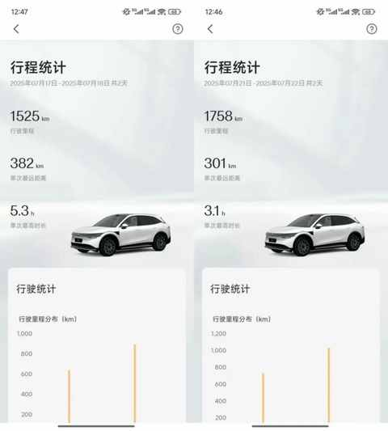
一位普通家长的二年级学期小结
今天下午已经全部考完，下周再上几天课就正式放暑假，而本周末是没有布置作业的，可谓是一个完全没有作业的周末。
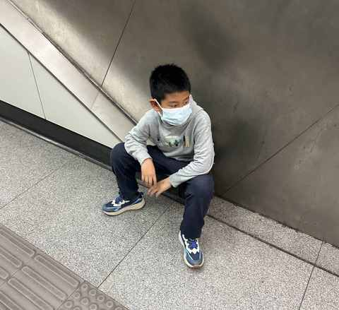
从骑行转到跑步：一个中年人两年有氧运动的变化
有一些悄然的变化，会在某一天某个时刻突然被感知到，进而促使我们去回顾这个转变是如何在潜移默化间完成的。
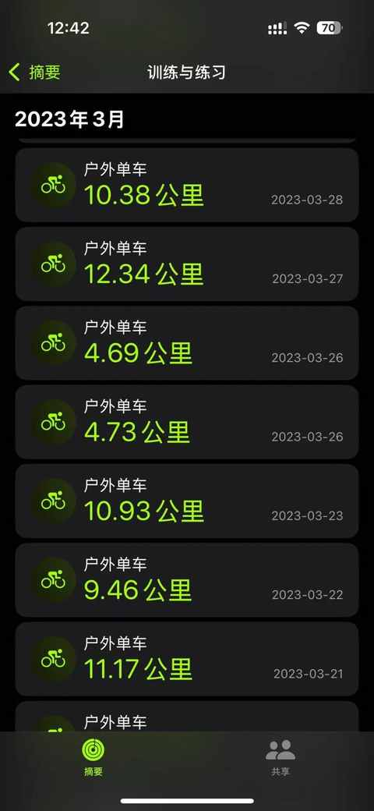
2025即将过半，减重30斤 的中年人又有了 3 个维持体重的新感受
20 多岁的时候我是完全不信人过了 30 岁之后身体会明显的走下坡路的，当时 90kg，打一下午篮球也不觉得膝盖不舒服，体力上也能维持。
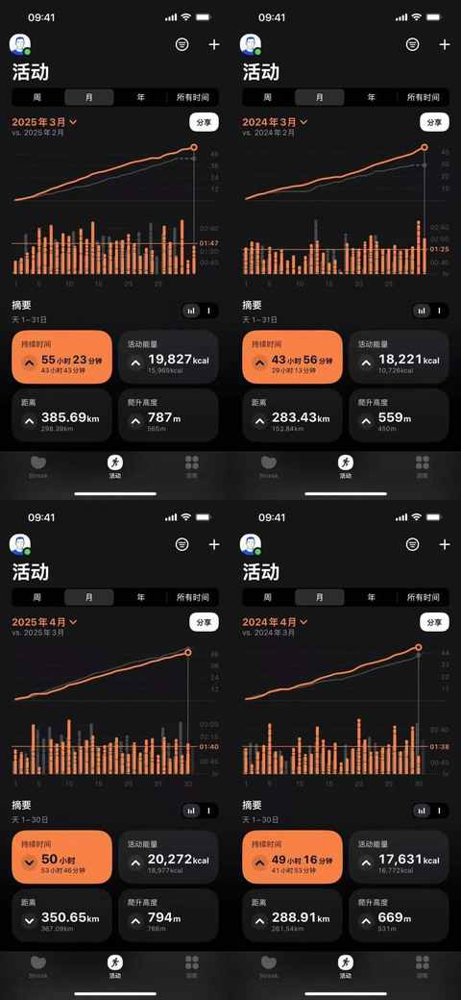
一位父亲四刷家长会的转变：从摆烂到全场记笔记！
有感于刚参加完 的第四个家长会，即二年级下学期的期中家长会，可谓字面意义上的 一期一会。
记在 3 月最后一个周五的二三事
一个与典型的周五有一丢丢不一样的一天， 记录下在 3 月的最后一个周五里发生的二三事。
记在 3 月最后一个周五的二三事
一个与典型的周五有一丢丢不一样的一天， 记录下在 3 月的最后一个周五里发生的二三事。

普通中年人的破局尝试，用 30 天养成一个新习惯：每天发 1 条朋友圈
上个月看的一本书《小步向前：如何用小生意创造大效益》
普通中年人的破局尝试，用 30 天养成一个新习惯：每天发 1 条朋友圈
上个月看的一本书《小步向前：如何用小生意创造大效益》

35 岁第一天，一个非典型中年家庭主夫的周五流水账
虽 挺久 不上班，但周五依然会是较为放松的一天，包括但不限于：早上不用炒菜、放学早、不用辅导作业……

35 岁第一天，一个非典型中年家庭主夫的周五流水账
虽 挺久 不上班，但周五依然会是较为放松的一天，包括但不限于：早上不用炒菜、放学早、不用辅导作业……

一位普通中年男人的 2 月生活实录
中年人的生活多少有点波澜不惊，很平淡很规律，上午用笔在纸上快速的记录了 2 月份的零碎记忆，就以此来做记录：

一位普通中年男人的 2 月生活实录
中年人的生活多少有点波澜不惊，很平淡很规律，上午用笔在纸上快速的记录了 2 月份的零碎记忆，就以此来做记录：

家有小学生，或许这 5 个 tips 能帮你搞定吃饭难题
作为居家办公的爸爸，承担着每天接送娃上下学及准备早餐和晚餐的重任。

前比亚迪车主，聊聊近两年试驾的 11 款自主品牌纯电车：小鹏、蔚来、极氪……
最近两年多，试驾 11 款纯电车，均为自主品牌车型，在这 11 款车中：小鹏旗下有 3 款、蔚来旗下有 3 款、极氪汽车有 2 款。

前比亚迪车主，聊聊近两年试驾的 11 款自主品牌纯电车：小鹏、蔚来、极氪……
最近两年多，试驾 11 款纯电车，均为自主品牌车型，在这 11 款车中：小鹏旗下有 3 款、蔚来旗下有 3 款、极氪汽车有 2 款。
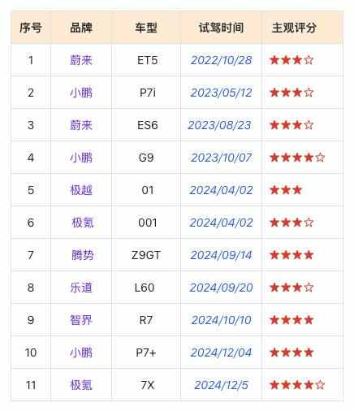
前比亚迪车主，聊聊近两年试驾的 11 款自主品牌纯电车：小鹏、蔚来、极氪……
最近两年多，试驾 11 款纯电车，均为自主品牌车型，在这 11 款车中：小鹏旗下有 3 款、蔚来旗下有 3 款、极氪汽车有 2 款。

电车春运 2300km 的智驾感受：用了就真回不去啦！
先对齐 “智驾” 的定义，标题中提及的 “智驾” 约等同于各个车厂的高阶智驾，而且各个车厂给自家的高阶智驾都取了很独特的名字，好在现在有 ai 工具，豆包给到了 16 家的智驾名称和简介。

电车春运 2300km 的智驾感受：用了就真回不去啦！
先对齐 “智驾” 的定义，标题中提及的 “智驾” 约等同于各个车厂的高阶智驾，而且各个车厂给自家的高阶智驾都取了很独特的名字，好在现在有 ai 工具，豆包给到了 16 家的智驾名称和简介。
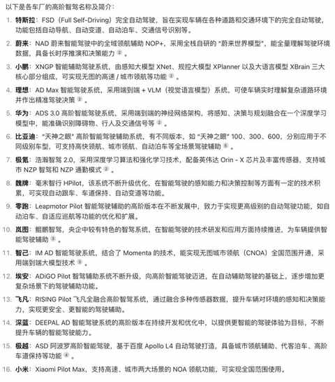
人到中年，减肥后维持体重不反弹一年的感悟
在整个 2024 年，体重的波动范围主要在 73-75kg，偶尔会到 76kg，即使在连续 3-5 天不运动的情况下体重也不会快速增重。
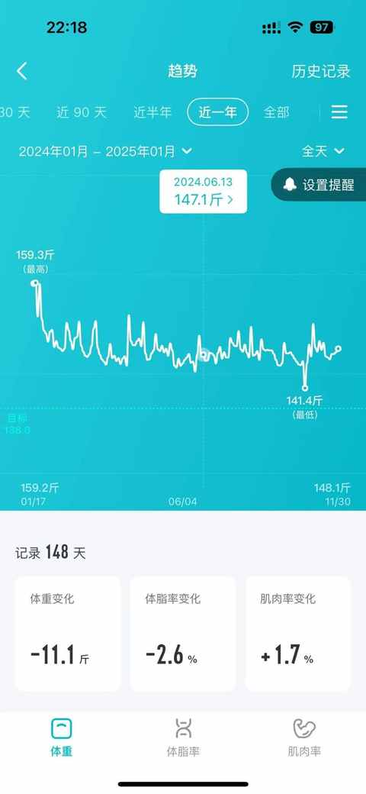
人到中年，减肥后维持体重不反弹一年的感悟
在整个 2024 年，体重的波动范围主要在 73-75kg，偶尔会到 76kg，即使在连续 3-5 天不运动的情况下体重也不会快速增重。

人到中年，减肥后维持体重不反弹一年的感悟
在整个 2024 年，体重的波动范围主要在 73-75kg，偶尔会到 76kg，即使在连续 3-5 天不运动的情况下体重也不会快速增重。

请回答 2024，用 10 个问题回顾过去的一年
1️⃣ 今年做了什么以前从未做过的事情?

请回答 2024，用 10 个问题回顾过去的一年
1️⃣ 今年做了什么以前从未做过的事情?

普通中年人的 2024 阅读流水账
2024 年把不少去年用于看书的时间用来运动，从而导致阅读量相较去年有明显下滑，好在体重维持住，体重没有反弹。

普通中年人的 2024 阅读流水账
2024 年把不少去年用于看书的时间用来运动，从而导致阅读量相较去年有明显下滑，好在体重维持住，体重没有反弹。

十年之前：在 2024年余额不足时回顾 2014
有感于最近几天听的一期播客，在12月许多节目都在回顾2024年，无时差研究所把时间线跳到了十年前。

普通中年人拓展边界的那些小尝试
按道理说，人到中年应该不折腾才对，安稳的波澜不惊的过每一天才是最佳选择。
普通中年人拓展边界的那些小尝试
按道理说，人到中年应该不折腾才对，安稳的波澜不惊的过每一天才是最佳选择。
B区出发，普通中年男人的首半马复盘
之前自测的10km的最好成绩是49分47秒，平均配速为4分56秒，当时感受上觉得已经到极限，短时间很难再提升。
B区出发，普通中年男人的首半马复盘
之前自测的10km的最好成绩是49分47秒，平均配速为4分56秒，当时感受上觉得已经到极限，短时间很难再提升。

千里之行，始于足下：跑步1000km 后的 5 个感受
有知有觉，在 2024 年跑了1000km！

一个普通中年男人总结的 5 个省省 tips
随着年龄的增长，冲动消费的情况越来越少，大部分时候也能更理性地评估是否要买某一个东西。

尬聊实录：与 2 个维修平台的上门维修师傅的闲聊总结
突然发现最近这两年和他人面对面的闲聊越来越少。

国庆 3 天珠海行的一些碎碎念
国庆去了一趟珠海，3 号晚上出发，7 号中午返回上海，加起来三天四夜。

普通人一年的跑步实践，完成 51 次 10km 后的 5 点感悟
上个月，也就是 9 月份，做了一个小尝试： 单次跑步不低于 10km，最好隔天跑一次，不连续跑超过 3 天。
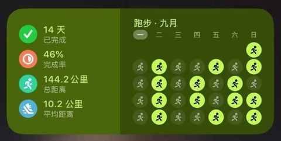
淘宝的一个史诗级的更新：可使用微信支付！！！
近期的一个重磅新闻，淘宝居然支持微信支付啦！！！
all in 微信读书 8 个月之后，想分享这 6 个纯主观使用技巧
全面拥抱电子书，绝大多数书籍会在阅读电子书之后再决定是否购买实体书
别再说跑步伤膝盖了，这 6 本书运动健康方面的书籍，一定都看看！！！
有感于下面这条文章中的留言，该用户的核心观点是：跑步伤膝盖！！！
面对 35 岁：普通中年男人的 6 个切身感受
作为第一批 90 后，算上虚岁早已 35 岁，第一批 95 后也很快要年过三旬，时间很公平，所有人一视同仁。
跑步 or 骑行：一年有氧运动的个人体验与建议
持续做有氧运动一年后的最大收获是： 心肺能力提升 + 体重到正常范围。
想写一个系列，讲讲我的专科朋友们
1️⃣ 选择困难：每次决定写哪个选题耗费太多时间
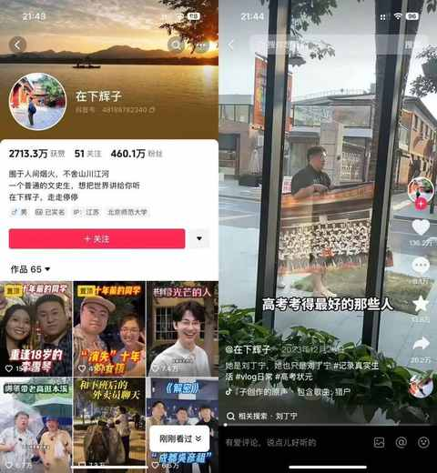
踩过坑才明白商业常识的价值，这 3 本书让你少走弯路
日常工作和生活中，总有一些道理只有踩过坑之后才能懂。

生活日常之：把运动融入其中
最近的天气依然是有一些热，不过温湿度已趋近于友好（相对七八月份），可以说又到了能随时出门跑步或骑行的好时候。

生活日常之：柴米油盐酱醋茶，每一项都不简单
下午去学校接孩子之前，就已经想好晚上吃什么，接到之后先带娃去吃达美乐披萨（周二周三有七折），回到家之后再给自己做一份干净的减脂餐。
连续 9 年居家办公的 4 点体验与 5 个收获
按照惯例依然是先询问了 Kimi 关于居家办公的定义，总结很是完善，优点和缺点都有列举。
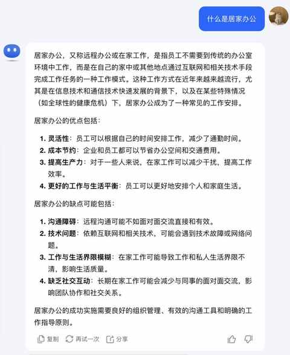
连续 4 个月跑量过 100km之后，对跑步又有了 5 点新感受……
积累跑量的过程并没有那么枯燥，一般会边听播客边跑，如果是听音乐会主要听凤凰传奇的，他们的歌特别适合用于后半程想提速的时候。
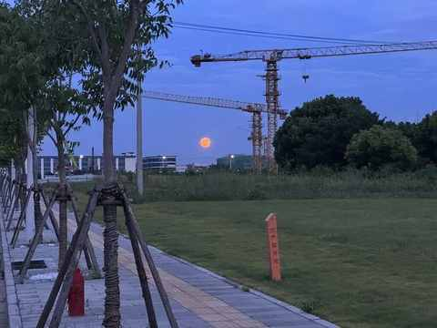
想要控糖吗？不妨先看看这本《控糖革命》！
一本关于控糖方面的图书，作者是一名法国的生物化学家、营养研究员和健康科普推广人。
还记得上次喝星巴克是什么时候吗？
上周日的上午，送娃去辅导班，把车停在了一个光照充足的露天车位，顶着 36 度的高温，把车里的脚垫拿出来晾晒。

10 多年前，那个没听到结局的故事……
大概是 10 多年前听到的这个故事，虽然当时并没有听到结局，但印象深刻，也和许多朋友聊到过。
减肥超12 个月，说说那些一直在复购且无法割舍的小零食……
虽然说是去年五一后就正式开始减肥，但是在吃上面真的没有亏待过自己，在零食上即使踩了一些坑但吃完依然是开心，这就可以啦，不能既要又要，觉得吃多就多动动。
燃脂效率比拼：9种运动一年的热量消耗分析
找到自己燃脂效率比较高的运动，然后在保障健康的情况下去多做这些运动，能逐步达到事半功倍的效果，反之可能是事倍功半。

连续发文30天：普通人的日更收获与体验
今天是日更公众号的第 31 天，有必要总结复盘下连续发文 30 天的心路历程，毕竟是人生中首次连续发文 30 天。
近期听了有收获有启发的 17 期播客单集
听播客是每天都在做的事情，早上起床后，开始做早饭的时候就会戴上耳机，打开手机里的小宇宙 app，选一期播客开启崭新的一天。

成功携号转网一年多了，聊聊办理体验与感受
2️⃣ 原有运营商使用体验下降，网络不够快，在家里接电话会信号不好

关于 8 岁时喝健力宝中奖的记忆
小时候家里在镇上开小卖部，乍一听是多么令人羡慕，这往往意味着想吃什么就吃，想喝什么就喝，零食无限量供应。
在入坑 Mac的第 11 年，推荐这 9 款不可或缺的软件
端午节放假前的周五才把新系统安装完成，系统安装的时候选择的是格式化硬盘，那就表示所有软件都需要重新安装。
读完《超越百岁》，让你更有把握活到一百岁！
第一次用一篇文章的篇幅去介绍一本书，虽然可能最终也就是 800-1000 字，刚刚达到高考作文的字数要求，不过又不是考试没人打分，跟着感觉走就对咯。
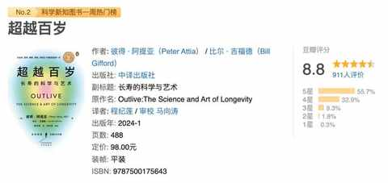
助力美好生活：不可错过的 7 款实用App
今天想推荐一些实用的 app，主要是因为前几天电脑出问题，后面的解决方式是重新安装系统，但是就一个普普通通的重置系统就折腾快两天才搞定，周五把新系统安装好之后，就是重新安装上各种必备的软件。
六月，对今后想做的事情有了一点新思考
之前有提到过，思考是很容易在日常中被一再忽略的但极其重要的事情。

恰逢618 ，推荐一些即实惠又好用的东西
分量有 150g，足够炒菜，而且还是开背过的，基本就是解冻后就能很快烹饪，快速出锅，实在是居家必备。
连续三年高考落榜：2007-2009年，我的非典型高考故事
坐标安徽，三次高考的结果，都是落榜，出分后均填写志愿，都被不同的大专院校录取，前两次填完志愿之后都说不复读，不过当时不够坚定，很听劝，亲戚朋友劝一劝开学又麻利的去复读的学校报到。

尝试输出的第21天，一个普通中年决定要重拾表达欲
其一，是昨天电脑出了点问题，今天没弄好，反而情况更糟糕了，已经完全不能用，需重装系统才行

尝试输出的第21天，一个普通中年决定要重拾表达欲
其一，是昨天电脑出了点问题，今天没弄好，反而情况更糟糕了，已经完全不能用，需重装系统才行

当每天用的电脑出问题之后……
1️⃣ 一切得从安装了某家银行的控件开始，安装之前一切正常，安装之后，突然打开某一个链接之后，浏览器就闪退，而且是所有浏览器：Edge、Chrome、Arc、Safari、Firefox等，打开该网址都闪退。

当看完 170 本书之后，阅读成为习惯
和最近几年所处的状态息息相关， 想从书中寻找答案！

从关注列表的 451 名 up 主里，选出来 10 位宝藏 up 主推荐给大家！
专业、有趣、有料的汽车区 up 主，会重点介绍关于驾驶体验的内容，每期视频都有多位卡司出镜，末尾都有关于车辆方面的 QA。

2024 年 5 月份阅读总结 02
昨天的阅读总结主要梳理了前面 4 本书的内容：

2024 年 5 月份阅读总结 01
5 月份稍微有点划水，上旬的阅读状态好一些，中下旬状态有下滑，整体完成 9 本书的阅读。

不上班的第 3 年，迷雾正在开散
24 小时都在上班的 ai，回答了我提的问题：三年不上班是什么体验。
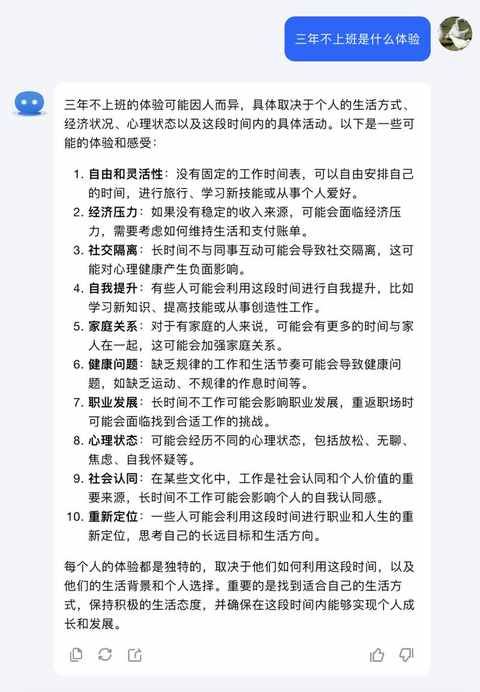
中年健身小白，半年54 次私教课的感受分享
今天主要练的臀腿，现在是每周一、三、五的早上 8 点 30 到 9 点半，把娃送到学校之后直奔健身房：开练！

中年健身小白，半年54 次私教课的感受分享
今天主要练的臀腿，现在是每周一、三、五的早上 8 点 30 到 9 点半，把娃送到学校之后直奔健身房：开练！

聊聊我贯彻在日常中的重要原则：主动安全
幼儿园小朋友都知道要注意安全，不过日常生活中还是能遇到不少忽略安全的现象：不戴头盔，戴头盔不系紧、开车变道不打灯……

那些成长中的小幸运
20 多岁的时候没有这种感受，过了 30 之后，在年岁渐长的过程中总会在某一刻闪回一些事情，不由分说的某件事就到了脑子里面，偶尔也会有新的感受，特别是当下的情景和脑中的事情有直接关联的时候。
男人，可能天生更适合做家务活
把男人和家务组合在一起，去搜索信息，有一个 综艺 节目很快就能映入眼帘：《做家务的男人》。

这个5 月，我感谢了两位曾线上咨询的老师
整个 5 月份的感觉都挺奇妙，时不时会有一些想法冒出来，有一天刷微博的时候看到纵横四海主播的一条关于用输出倒逼输入的微博，突然就想按照上面说的方法来试试看，然后就开始每天写 800 字左右，并在公众号发布出来。

一名资深 i 人的自我修养
不知从什么时候开始，突然从小就听到的内向与外向的表述就变成了 i 人和 e 人，网络上同步也有了许多热门的探讨。

4 年累计收听超 1700 个小时之后，想大声说：去听播客吧！
大概是从 2019 年国庆后在朋友的建议下，开始听播客，自此听播客就成为了日常，两个账号的累计收听时长已超过1700 小时。
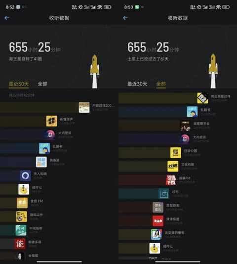
不断增长的年龄会带来什么
虽然年岁渐长，并没有觉得不年轻了之类的，在 80% 的时间里也不会觉得自己和 20 多岁的时候有什么不一样，12 年前毕业的场景都还历历在目。
那些从书中寻找到的答案 01
2022 年的 12 月底，立了好几个 关于 2023 年要完成的flag，其中有一条是读完 52 本书，也就是一周一本，底层的需求就是想从书中寻找答案，寻找确定性。
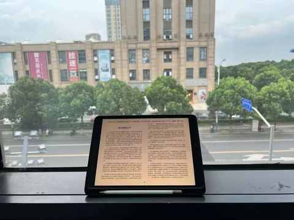
当中年男人不知道做什么的时候……
现在很多幼儿园的小朋友已经会了一个词：无聊。

关于体重从 91kg 到 75kg这件小事
是从去年 3 月份开始骑车，正好之前有买过一辆公路车一直闲置着，简单给轮胎充充气，清理下之后就开始骑了，感受不错。

跑步新手，一年600 km跑量的感受分享
关键因素： 老婆在交个朋友直播间买了一双跑步鞋
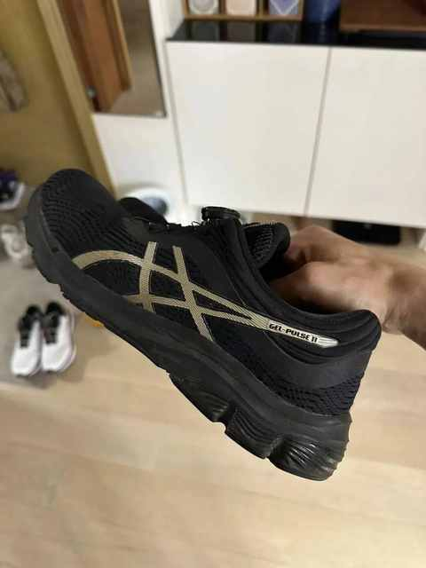
非典型不上班的中年男人的一天
非典型是因为从 2015 年的下半年开始就开启远程办公，自此就没有了通勤，无需地铁、公交、步行、骑行等等。